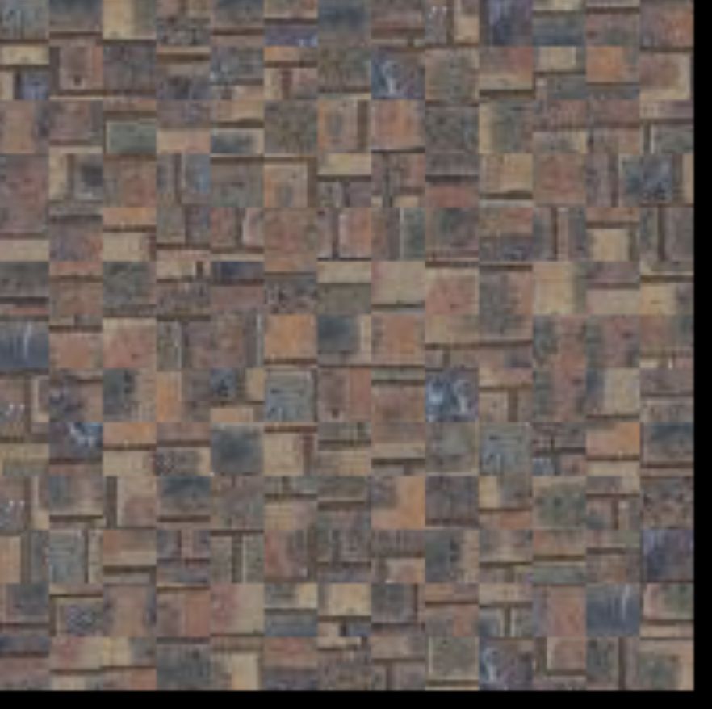
6.1 -- In this part, I randomly sample images.
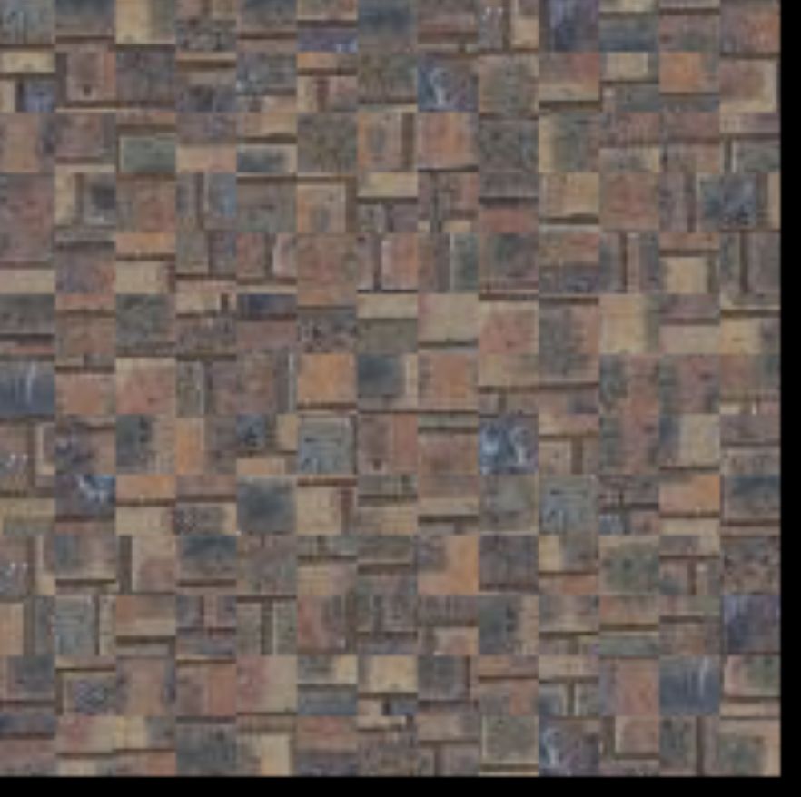
6.2
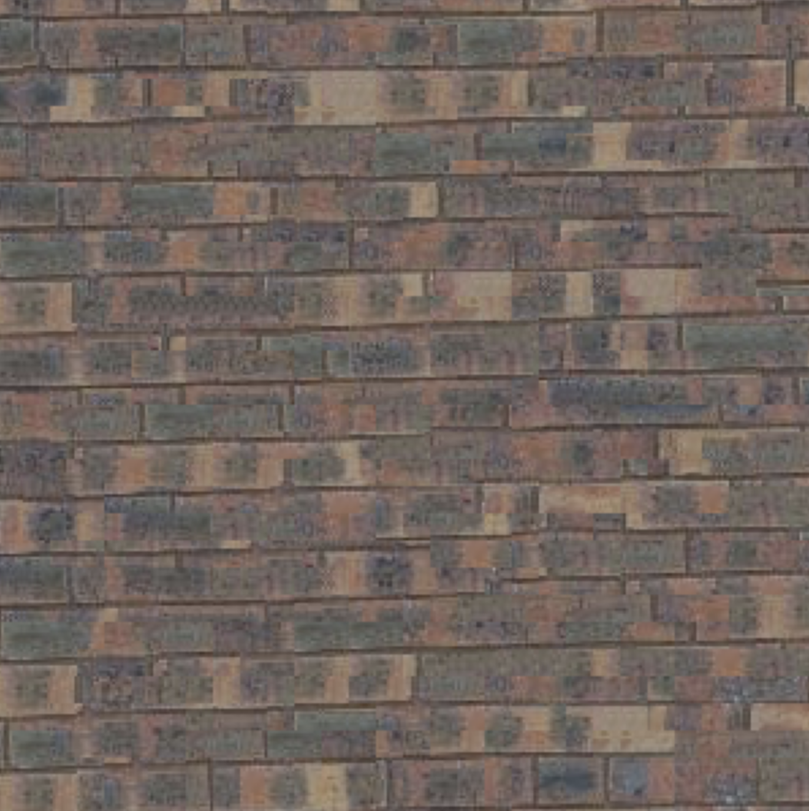
CHANGE -- this is a caption
6.3
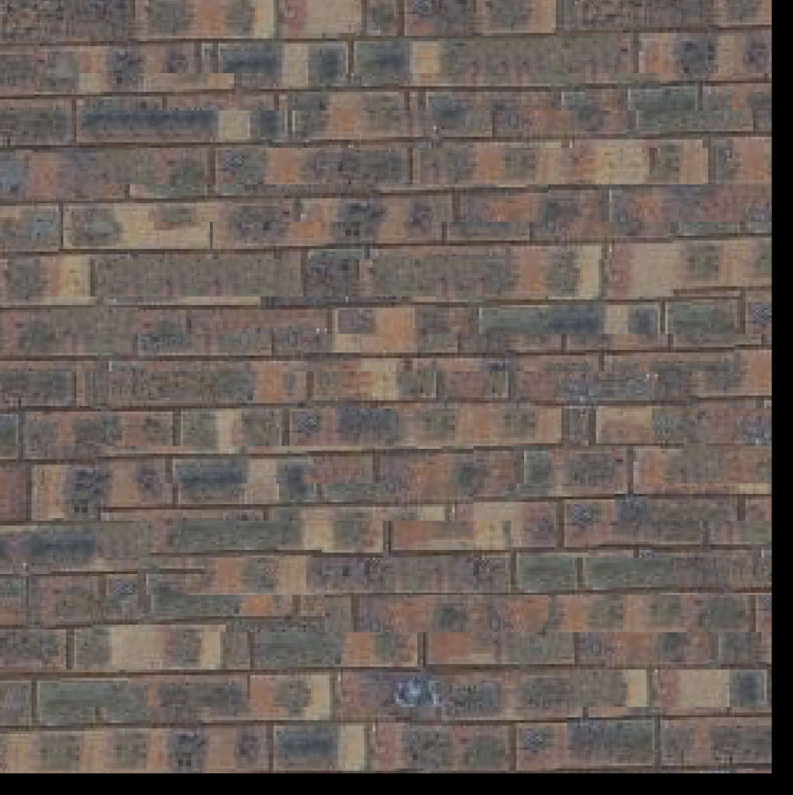
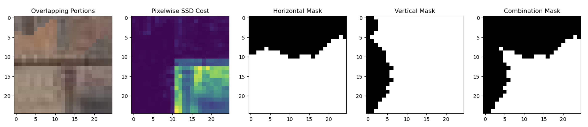

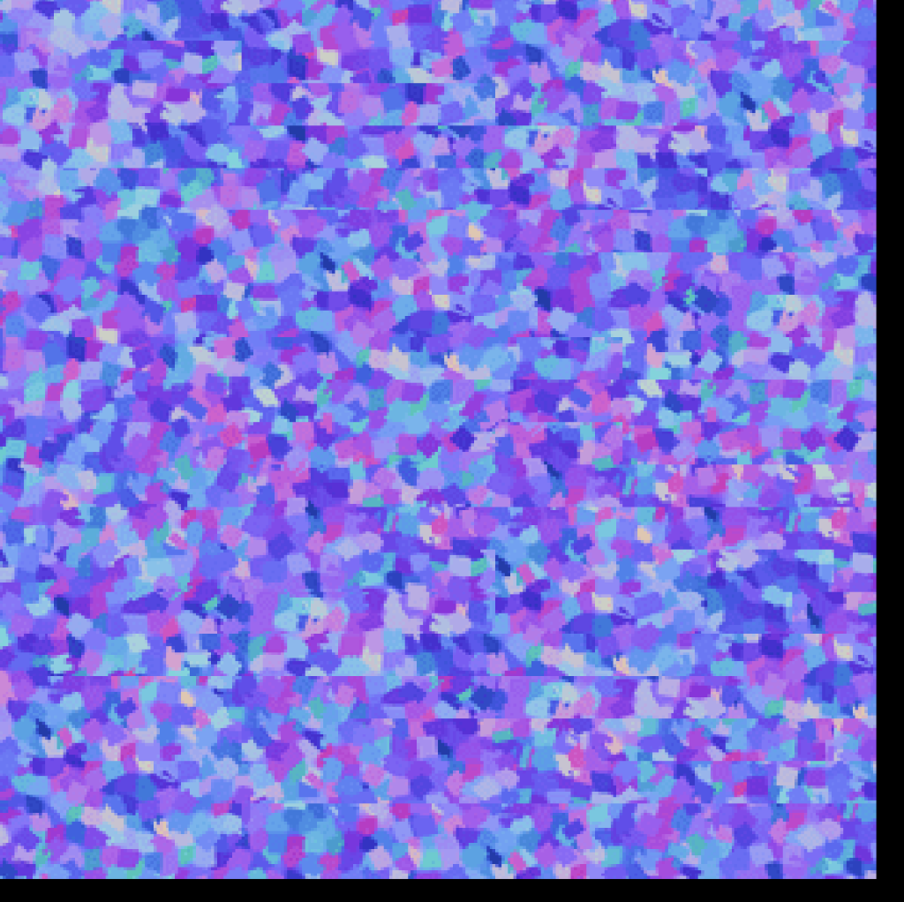

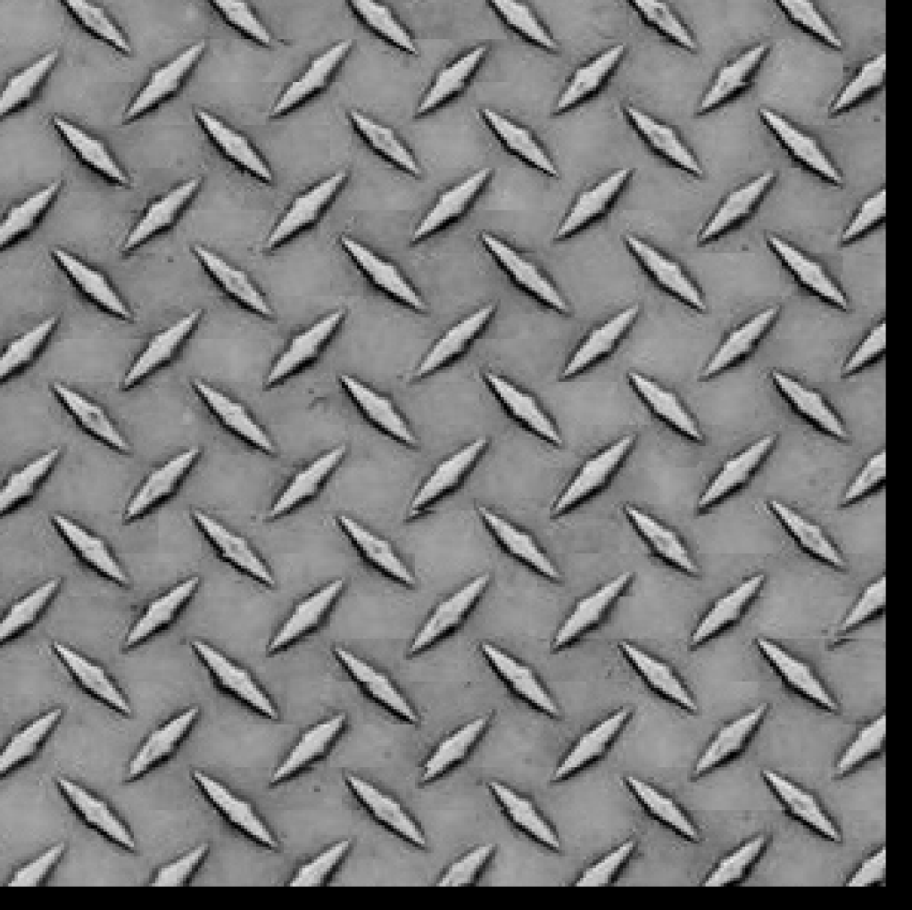
6.4
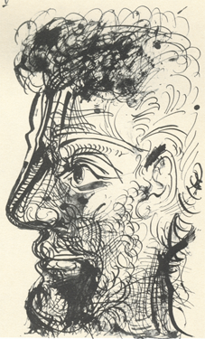

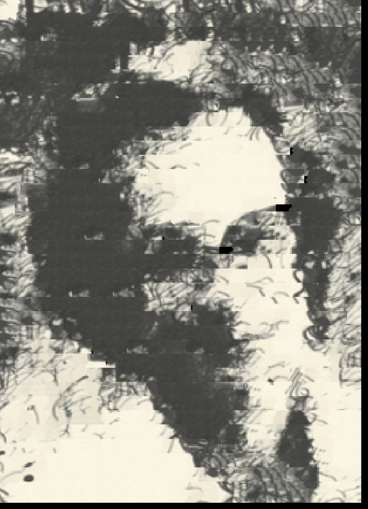


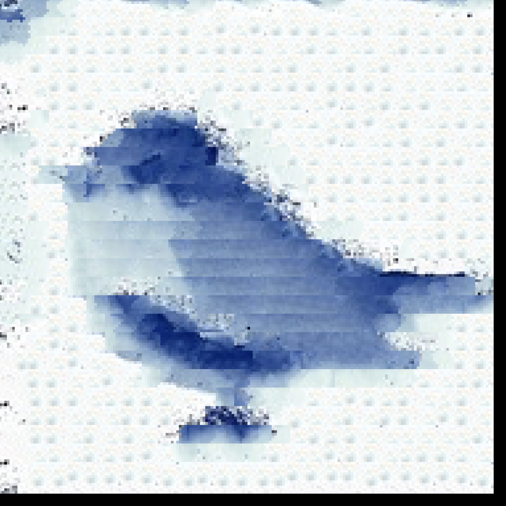

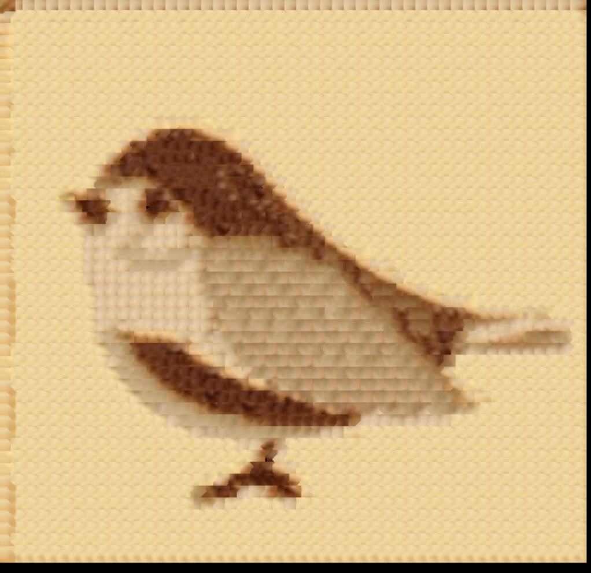

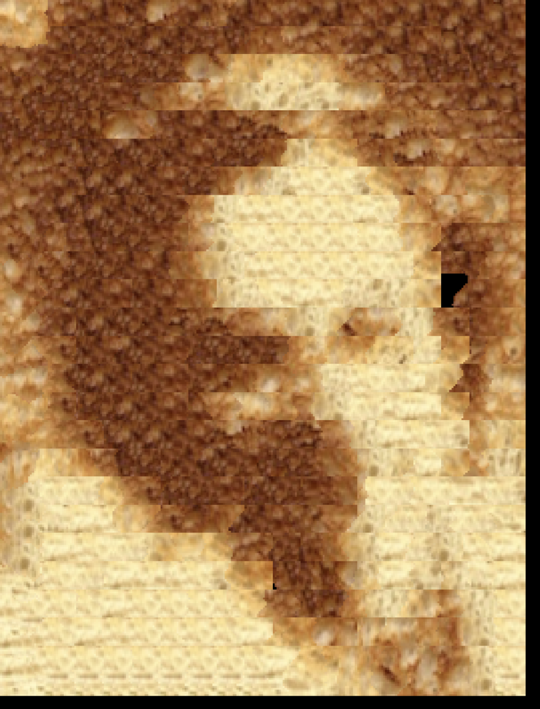
I use a mask and Laplacian Pyramids from Project 2 to blend the image above into an image of toast, so that it looks like a man inside toast.

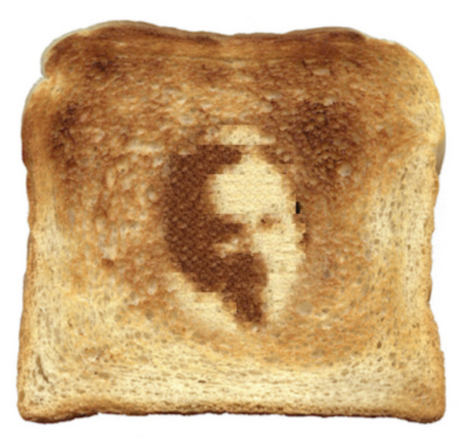
Aside: Burnt Bread I accidentally loaded the images as uint type, I got a funny image that I wanted to share. It looks like it could be on a t-shirt.
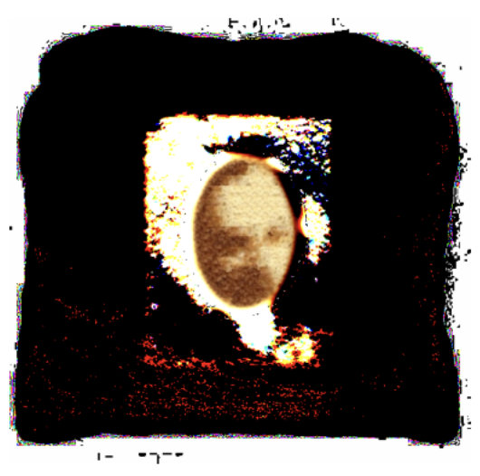
In this project I played around with image quilting. One key takeaway is that the code for transfering texture from one image to another is very similar to that of recreating texture from just one image.